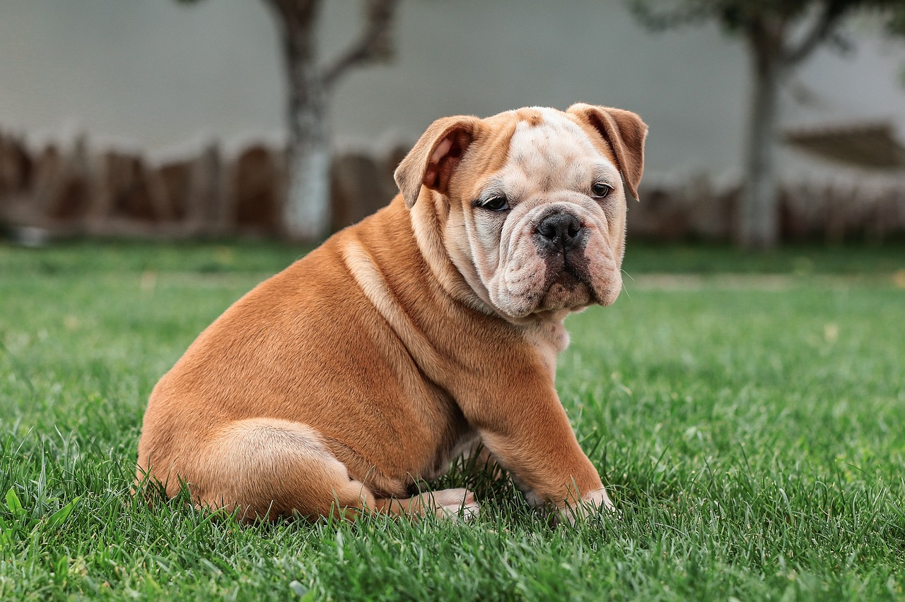

Bulldog Inglês

Originário da Inglaterra, o Bulldog foi criado inicialmente para uma prática violenta chamada "bull-baiting", hoje proibida. Com o tempo, a raça foi sendo selecionada para um temperamento muito mais calmo, tornando-se um dos cães de companhia mais queridos do mundo.
Ouça o latido
Veja o em ação
Características
O Bulldog é calmo, afetuoso e de baixa energia, o que o torna ideal para apartamentos. É uma raça de porte médio, com corpo robusto e enrugado, além de ser bastante sensível ao calor.
A raça é reconhecida oficialmente pela CBKC, que estabelece o padrão da raça no Brasil.
Nível de energia:
Facilidade de adestramento:
"O Bulldog pode parecer teimoso, mas é um dos cães mais leais e companheiros que existem."
— Manual Brasileiro de Raças Caninas
Você sabia?
O Bulldog já foi visto como
um cão agressivo e voltado para brigas um dos
cães mais dóceis e afetuosos que existem hoje, resultado
de décadas de seleção cuidadosa do temperamento da raça.
Curiosidade sobre o Bulldog
Devido ao formato do seu focinho curto (raça braquicefálica), o Bulldog é mais sensível a calor e exercícios intensos, precisando de cuidados especiais em dias quentes.